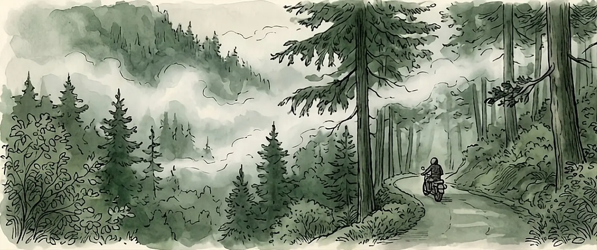
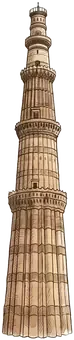
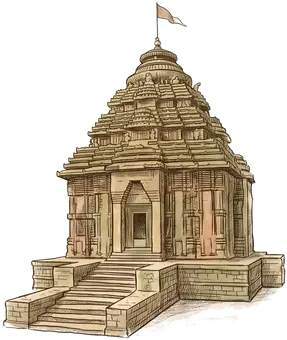
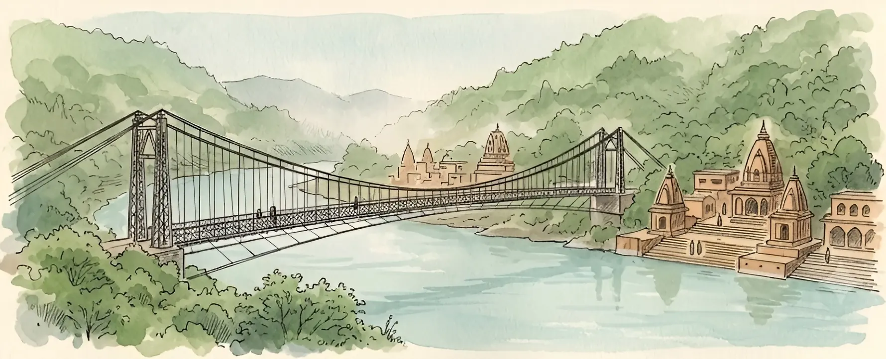
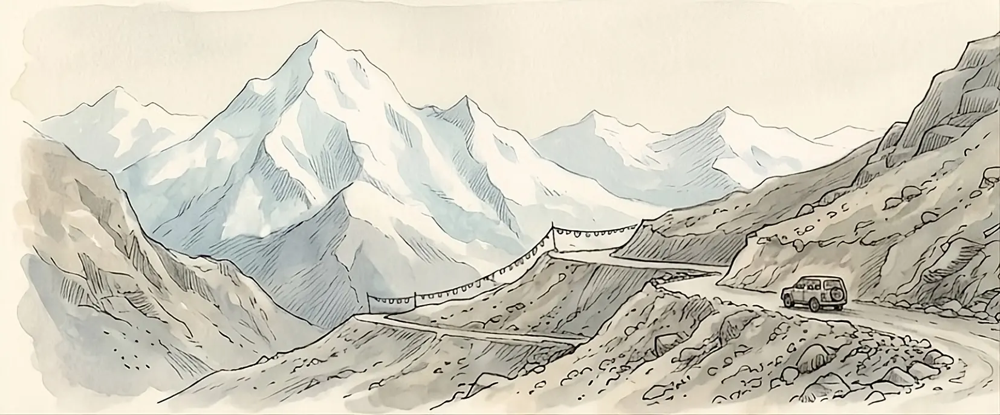
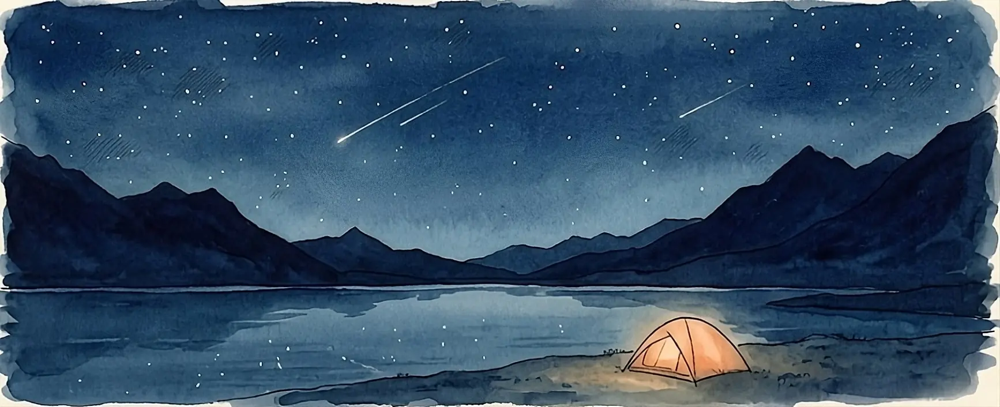

Chapter two
Into the green
Pine forests, wet roads and mist that opens like a curtain. The first hours of the climb are the quietest.



Chapter two
Pine forests, wet roads and mist that opens like a curtain. The first hours of the climb are the quietest.

Chapter three
Rishikesh, suspension bridges, evening aarti and a slow breakfast by the Ganga before the road climbs again.
The road opens
Forest road, cool air and a full tank. This is where the motorcycle chapter begins.
Take the long way
Slow down before the climb. The best part is often the road between the places.
Northbound
A journey designed to feel unhurried, personal and made for the people riding it.

Higher roads
Stone, sky and long empty stretches. The Himalayas start to feel larger than the map.

Under the stars
A long blue lake, cold wind and a camp pitched before the last light leaves the mountains.
Made for the high country
The SUV gives the journey space for longer days, colder nights and the things worth bringing along.
Across Ladakh
Monastery walls, exposed passes and empty bends. No rush to get through any of it.
Stay a little longer
Arrive before sunset. Sit still. Let the mountain do the rest.
The roads between chapters
Pine forests, river bends and mountain air.
High passes, monasteries and enormous skies.
A slower route through places with history behind them.
The last page
Tell us where you want to go, when you want to leave and how you want the journey to feel. We will shape the route with you.